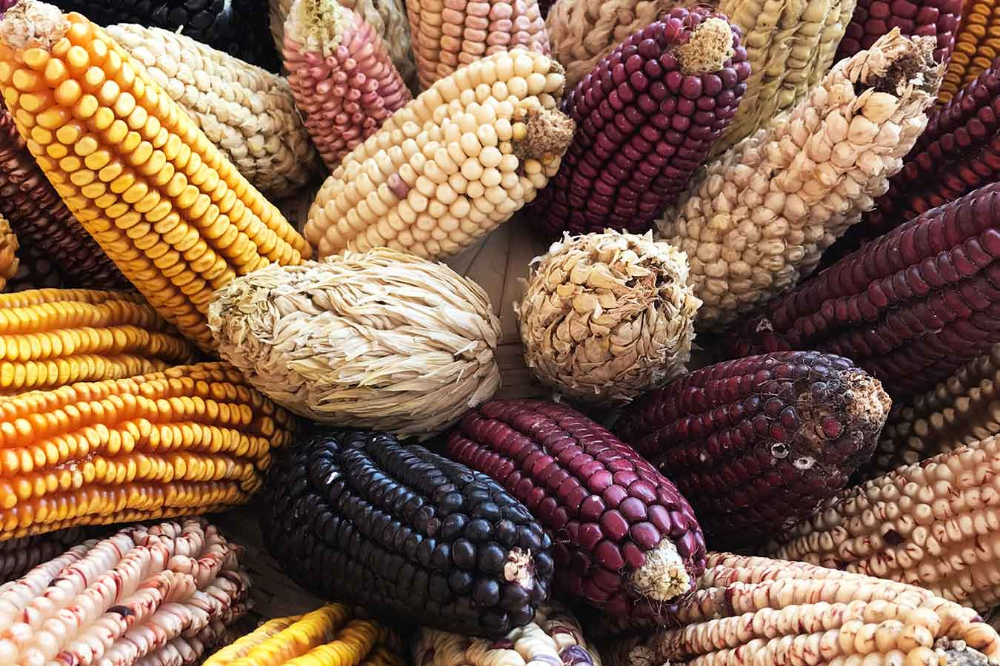
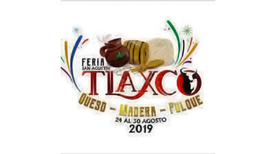
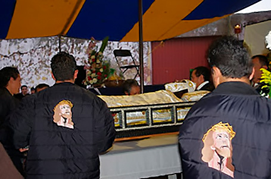

Ixtenco (del yuhmu: Yxtëingo ‘Fiesta del atole agrio’‘yx, 'agrio'; të, atole; ingo, fiesta’) es uno de los 60 municipios del estado de Tlaxcala,
México. Se ubica en las faldas del volcán La Malinche o Matlalcueye, colindando al norte y oeste con el municipio de Huamantla, al sur con Zitlaltepec de Trinidad Sánchez Santos
y al oriente con el municipio poblano de Nopalucan.4
Se la ha reconocido como el último reducto de la cultura otomí en el estado de Tlaxcala.5 El cerro Xalapasco, una loma de origen volcánico famosa por sus múltiples cráteres,
se encuentra dentro de los límites del municipio. Ixtenco es el nombre del pueblo porque se cuenta que los primeros pobladores hacían un ritual con atole agrio hecho con un tipo
especial de maíz color vino en una cueva cercana.
Gran fiesta del maiz“La noche del 23 de junio Ixtenco se viste de fiesta para conmemorar a su santo patrón San Juan Bautista. Ese mismo día, por la mañana bajo el sol brillante, la gente se afana en los preparativos: Vendedores colocan sus puestos, Muchachos de la feria revisan las luces Fieles adornan la iglesia La fiesta es el 24 de junio, pero dado que son nueve barrios, se llevan a cabo nueve novenarios, es decir, nueve días de anticipación festiva con serenatas en el atrio de la iglesia y misa por las mañanas. |
Feria del Queso, la madera y el pulque, agosto.la Feria del Queso, la Madera y el Pulque es un evento vibrante que celebra la rica herencia cultural y gastronómica de Tlaxcala y otras regiones de México. Es una oportunidad para que locales y visitantes se unan en la apreciación de la comida, la artesanía y las tradiciones que definen la identidad de la región. |
LA HUAMANTLADALa Fiesta del Calvario durante los domingos de Cuaresma es una celebración que combina elementos religiosos, culturales y comunitarios. A través de procesiones, escenificaciones, misas y actividades comunitarias, esta festividad ofrece una oportunidad para la reflexión espiritual, la expresión de la fe y la cohesión social. Es un testimonio del rico patrimonio cultural y devocional de las comunidades mexicanas que participan en ella. |